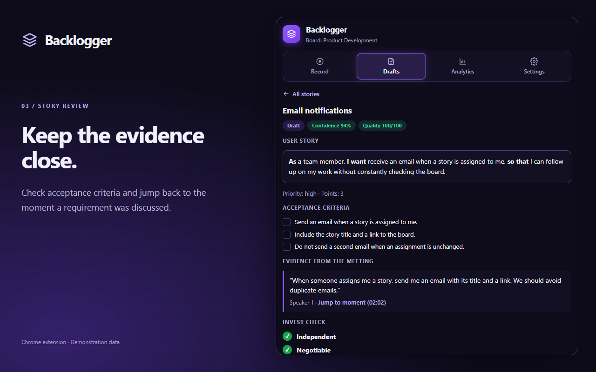
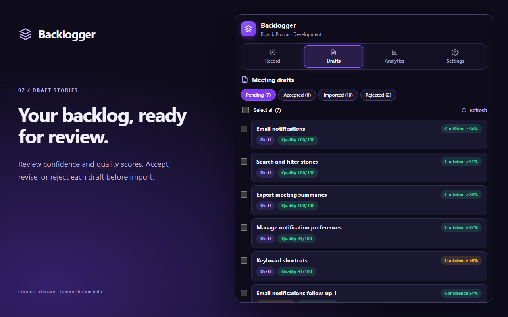

Meeting-to-Backlog Chrome Extension
Backlogger
My teammate and I built Backlogger after our Introduction to Software Engineering class exposed a gap in our workflow: turning meetings into Trello stories took too long, and details sometimes got left behind. The extension drafts evidence-linked stories from meeting audio for review and export to Trello or Jira.
- Team
- Two-person project
- Code
- GitHub ↗
- Stack
- React · TypeScript · FastAPI · SQLModel · Gemini
- Status
- Working prototype
The gap between the meeting and the board
In our Introduction to Software Engineering class, we were required to use a Trello board to track all of our user stories and progress. My teammate and I noticed that moving from a meeting to an updated board was a task of its own. Turning the discussion into stories took far too long, and sometimes requirements or details got left out along the way.
We built Backlogger to shorten that transition and keep the discussion attached to the work it produced. A transcript still leaves someone translating what was said into a backlog; a summary can miss the detail that makes a requirement testable. We wanted the draft, its acceptance criteria, and the evidence behind it in the same place, so a reviewer could check the story against what was actually discussed.
The extension records tab and microphone audio or accepts an audio file. A three-pass Gemini pipeline produces a timestamped transcript, extracts stories, then critiques them against INVEST: Independent, Negotiable, Valuable, Estimable, Small, and Testable. Each stage is validated against a structured schema and saved in PostgreSQL, making its output inspectable instead of leaving one opaque model response to explain everything.

A story can look good and still duplicate existing work
Checking a story by itself misses a basic problem: the board may already contain it. A story for all calculator functions and a separate multiplication story can each sound reasonable while covering the same scope. The review needs both pieces of work in front of it to notice the containment.
Backlogger retrieves existing Trello or Jira work, including epic context, and caches story embeddings. Similarity search selects relevant context for generation and retrieves neighbors for each new draft before critique. Embeddings choose candidates; they do not decide whether two stories are duplicates. The review distinguishes overlap, containment, and dependency, and confirmed scope findings affect the story's Independent check.
Retrieval is a starting point
Similar wording is not proof of duplicate scope, and different wording is not proof of independence. The useful division is to retrieve broadly, compare the actual requirements, and leave the evidence visible for a human decision.
Creativity needs a label
Conservative, balanced, creative, and exploratory modes change how far story discovery reaches beyond an explicit request. Exploratory mode actively looks for additional workflows and edge cases, but a plausible suggestion is still a suggestion. Drafts distinguish discussed requirements from inferred scope and proposed ideas, with assumptions and clarification needs carried through to review.
Reviewers can accept, edit, request changes, reject, or restore drafts. They can inspect the source quote and play the meeting audio at its timestamp without opening a separate web application. Board metrics are calculated from stored records rather than asking a model to invent percentages.

The retry is part of the feature
Creating a ticket is easy until the provider creates it and the connection drops before the backend receives the response. Sending the same request again can create a duplicate; assuming it failed loses track of the work. Export therefore has its own database record and a stable per-story idempotency key, with the external identifier saved as soon as it is known.
Trello exports reconcile previously created cards and add missing checklist items without resetting completed checks. Jira exports use an import marker to find an issue from an earlier attempt. If creation remains uncertain, Backlogger refuses to blindly create another ticket. Partial failures stay visible, and retries reuse completed work.
Manual and automatic exports process up to three stories concurrently for either provider. Each automatic export owns its database session and client, while Jira's account lock protects token refresh rather than the whole export. HTTP connections are reused, and Jira rate-limit responses pause subsequent calls in that backend process. Faster exports still have to preserve the same duplicate-prevention rules.
What runs where
- Chrome side panel: WXT, React, and TypeScript handle recording, review, settings, and in-panel audio playback.
- Backend: FastAPI coordinates processing, browser-scoped provider authorization, and exports. Connection tokens are encrypted before database storage.
- Storage: TigerData PostgreSQL holds transcripts, stories, reviews, embeddings, and export records through SQLModel. Supabase stores audio in a private bucket, with playback served through the backend.
- Verification: Tests cover structured pipeline output, database constraints, account connections, export reconciliation, concurrent imports, and extension interactions. Provider calls are mocked for repeatable regression tests.
What still needs work
This is a working prototype, not a claim of production readiness. Meeting data currently belongs to a shared backend workspace without per-user isolation. Authentication and authorization, a defined retention policy, and durable background processing are the next pieces needed before handling private customer meetings. A private storage bucket alone does not solve access control at the API.